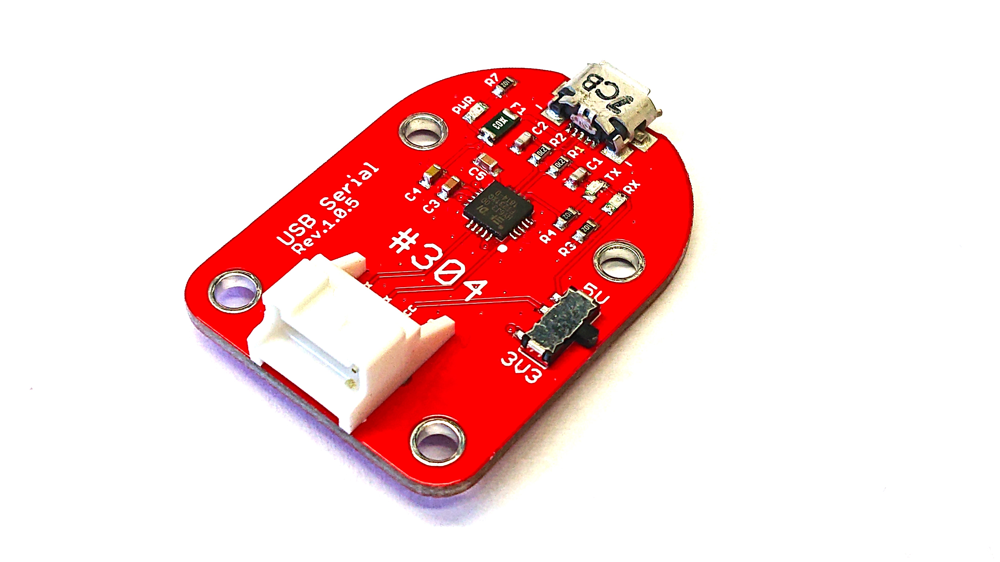

304 USBserial

サンプルコードの動作
FaBo USB Serialを使いUARTで通信いたします。
サンプルコード使用時の接続
FaBo #304 USB serial を SERIALに接続します。

※注意 #519への信号レベルは3.3Vになります。ジャンパーを3.3Vにセットしてください。 USBシリアルからは＃５１９へは、給電をしないでください。POWERジャンパピンをはずします。 また、デフォルトでは、SERIALピンのVCC（５V）からは給電されません。
インストール
$pip3 install pyserial
$sudo chmod 666 /dev/ttyTHS1
Brick回路図
~画像〜
import serial
# /dev/ttyTHS1でボーレート115200、パリティビットなしで設定
ser = serial.Serial("/dev/ttyTHS1", baudrate=115200 ,parity=serial.PARITY_NONE)
# ノイズデータがある場合があるのでバッファをクリアする
ser.reset_input_buffer()
# シリアル通信もバイナリ形式で送る
ser.write(b"RECEIVE:hello FaBo 2020 Press any 10-character keyboard\r\n")
print("send: hello FaBo 2020 Press any 10-character keyboard.")
# 受け取ったデータもバイナリ形式
# 引数は受け取る文字数
recv_data = ser.read(10)
print(recv_data)
print("send: TestEnd")
ser.write(recv_data)
ser.write(b"\r\nRECEIVE:TEST END")
## バーストテスト
import serial
import time
from time import localtime
# /dev/ttyTHS1でボーレート115200、パリティビットなしで設定
ser = serial.Serial("/dev/ttyTHS1", baudrate=115200 ,parity=serial.PARITY_NONE)
# ノイズデータがある場合があるのでバッファをクリアする
ser.reset_input_buffer()
# シリアル通信もバイナリ形式で送る
for w in range(255):
ser.write(b"RECEIVE:hello world! FaBo 2020-2021-2\r\n")
ser.close()
#１００文字を入力して送信して表示する。QWERT入力確認
import serial
# /dev/ttyTHS1でボーレート115200、パリティビットなしで設定
ser = serial.Serial("/dev/ttyTHS1", baudrate=115200 ,parity=serial.PARITY_NONE)
# ノイズデータがある場合があるのでバッファをクリアする
ser.reset_input_buffer()
ser.write(b"INPUT CHAR.\r\n")
# 受け取ったデータもバイナリ形式
# 引数は受け取る文字数
for w in range(100):
recv_data = ser.read(1)
ser.write(recv_data)
ser.write(b"TEST END.\r\n")
ser.close()